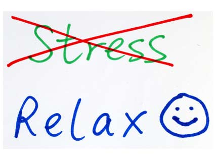

Stress Relief Tips
 Tips for Decreasing Stress/Anxiety in Your Life
Write down your schedule and assess a typical day. If there is no downtime
to relax, there needs to be a change.
- Get enough sleep (6-8 hours per night)
- Eat healthy food that nourishes your body
- Exercise
- Turn off and relax for at least 20 minutes a day
- Learn a repetitive activity like knitting or crochet
- Journal
- Write down a "to do" list that is running in your brain to get it out
- Reframe a problem and prepare for possible solutions but leave it for later
- Get professional help if necessary